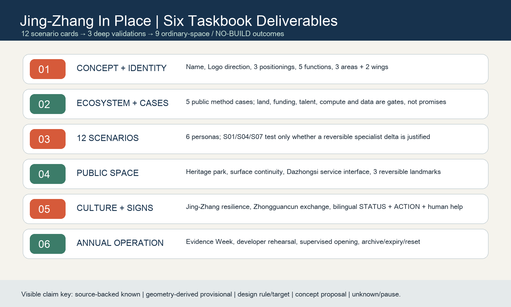
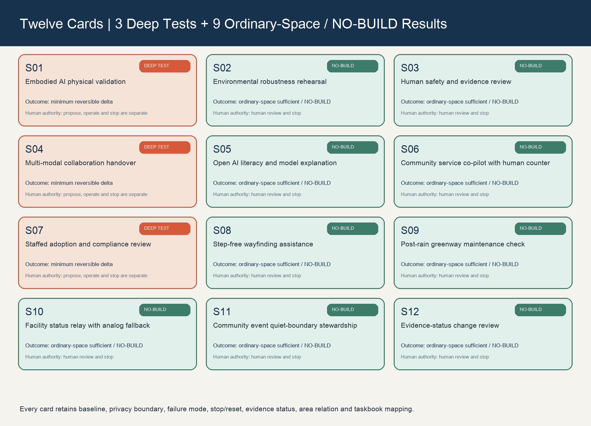

Land-use concept and buildings
Concept land-use, building prototypes and retain-repair-open-edge-adapt actions explain STATUS × ACTION; no prototype is presented as an existing-building survey.
STATUS × ACTION decides what the existing city may do. AI earns a minimum reversible spatial delta only where ordinary space is demonstrably insufficient and a human can stop it.
The overview map places the coordinating study, provisional general boundary and three key areas together. It communicates conceptual hierarchy only, never a statutory boundary, ownership condition or engineering survey.

Concept land-use, building prototypes and retain-repair-open-edge-adapt actions explain STATUS × ACTION; no prototype is presented as an existing-building survey.
Ordinary streets, step-free walking, cycling, service and blue-green public space come first. Bridges, tunnels, underground space and capacity remain professional-deepening questions.
Renewal projects begin with evidence and interface audits. Core metrics are recalculable design metrics from participant-supplied provisional geometry, not statutory FAR, height or capacity.
The six-task spine, 12 cards and three validations cross-check task coverage; self-check status, sources and assumptions remain traceable in manifest.json, sources.json and assumptions.json.
The 12 tasks are not 12 construction projects. S01/S04/S07 are three deep validations awaiting future conditions; the other nine explicitly conclude ordinary-space sufficiency or NO-BUILD. With AI off, public routes, human service, accessibility, maintenance and daily life remain complete.
Concept, ecosystem, scenarios, public space, culture and operation are not isolated chapters. One loop connects them: question entry - ordinary-space sufficiency - deep admission or NO-BUILD - human review - reset.

Name, original Logo direction, three positionings, five functions and three areas plus two wings.
Five public method cases; land, funding, talent, compute and data are gates, not promises.
12 cards, 3 validations, 6 personas and Xiaoyuehe's appealable maintenance path.
Heritage park, surface continuity, Dazhongsi evidence/appeal interface and three reversible landmarks.
Jing-Zhang resilience, Zhongguancun exchange and bilingual PLACE + STATUS + ACTION + human help.
Evidence Week, developer rehearsal, supervised session, public review and expiry/archive/reset.
Each card preserves persona/need, ordinary baseline, AI capability, sufficiency, minimum delta, operation/stop roles, privacy, failure, reset, evidence status, area relation and taskbook mapping. Deep scenarios test only whether professional deepening is warranted - never deployment or engineering feasibility.

Removable safety edge, observation edge and plug-in kit only after task, rights, qualified operator, safety and reset rehearsal are verified.
Reversible handover between public learning and consent-bound session; absent access, data, accessibility or stewardship condition retains ordinary room.
Removable privacy screen, staffed appeal desk and evidence board; no opening without paper fallback, qualified review and a contest route.
S02/S03/S05/S06/S08/S09/S10/S11/S12 use ordinary rooms, human service, physical wayfinding or maintenance work orders.
East-west continuity begins with a surface walking stitch. North-south continuity begins by auditing station-city-ground-public-space sequence. No bridge, tunnel, underground space or engineering capacity is claimed feasible. The heritage park keeps AI-off physical interpretation, accessible pause, human maintenance and ordinary public life.
Zhongzhiyuan carrier-edge status/reset cue. It never blocks public route and leaves with the S01 kit.
AI Origin public-side explanation, consent and exit. With AI off it is an ordinary public-learning table.
Dazhongsi service-interface human inquiry, paper alternative and contest route. On stop it returns to ordinary referral.
Reversible Evidence Honor Rail: only consented public contribution, method, source, review date and expiry/reset state; never biometric ranking, unverified achievement or permanent celebrity branding.
Evidence Week, Reset Receipt and Ordinary City Open Room are identity directions, not a confirmed calendar. Sequence: public questions + verification → developer rehearsal in ordinary carriers/NO-BUILD → supervised S01/S04/S07 only after admission → public evidence + independent review → archive/expiry/full reset.
No scenario opens before public-interest/sufficiency test, human authority, appeal route, access confirmation and reset rehearsal. Failure of any one returns to ordinary city.